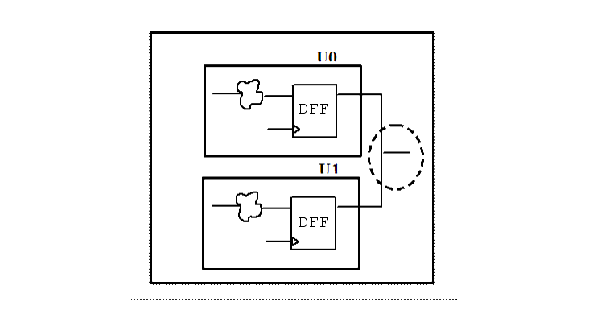

Description
This rule detects signals that are driven by multiple modules in the design hierarchy.
Policy
DESIGN
Ruleset
STRUCTURE
Language
VHDL/Verilog
Type
Hardware
Severity
Note
This is an example of invalid Verilog code, followed by a circuit diagram that illustrates the problem:
module ntl_str89_top (Clk, Din1, Din2, Dout); input Clk, Din1, Din2; output Dout;//NTL_STR89, Dout driven by multiple modules in design ntl_str89_sub1 U0(.Clk(Clk), .Din(Din1), .Dout(Dout)); ntl_str89_sub2 U1(.Clk(Clk), .Din(Din2), .Dout(Dout)); endmodule module ntl_str89_sub1 (Clk, Din, Dout); input Clk, Din; output Dout; reg Dout; GTECH_FD1 I0 (.D(Din), .CP(Clk), .Q(Dout)); endmodule module ntl_str89_sub2 (Clk, Din, Dout); input Clk, Din; output Dout; reg D_temp; GTECH_FD1 I0 (.D(Din), .CP(Clk), .Q(D_temp)); GTECH_NOT I1 (.A(D_temp), .Z(Dout)); endmodule